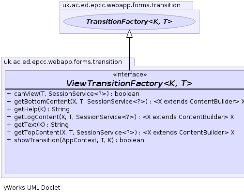
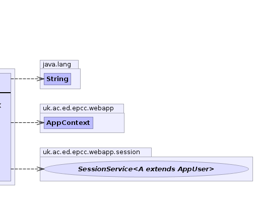

K - key typeT - target typepublic interface ViewTransitionFactory<K,T> extends TransitionFactory<K,T>
TransitionFactory that can use the generic view_target pages.
These show a html summary of the object and give buttons to invoke the possible
transitions on the target. The view page is shown if no specific transition is requested.
This is incompatible with DefaultingTransitionFactory if both interfaces are implemented the
view operation will take precedence.ViewTransitionProvider,
ViewPathTransitionProvider|  |  |
| Modifier and Type | Method and Description |
|---|---|
boolean |
canView(T target,
SessionService<?> sess)
Can the current person view this target
|
default <X extends ContentBuilder> |
getBottomContent(X cb,
T target,
SessionService<?> sess)
Get the content to be displayed at the bottom of the target page.
|
default java.lang.String |
getHelp(K key)
Get tooltip help string for an operation
|
<X extends ContentBuilder> |
getLogContent(X cb,
T target,
SessionService<?> sess)
Get the content to be displayed on the view target page as part of the target pane.
|
default java.lang.String |
getText(K key)
get custom button content.
|
default <X extends ContentBuilder> |
getTopContent(X cb,
T target,
SessionService<?> sess)
Get the content to be displayed at the top of the target page.
|
default boolean |
showTransition(AppContext c,
T target,
K key)
Should the transition be listed on the view page.
|
accept, allowTransition, getSummaryContent, getTargetName, getTransition, getTransitions, lookupTransitiongetContextboolean canView(T target, SessionService<?> sess)
target - sess - default <X extends ContentBuilder> X getTopContent(X cb, T target, SessionService<?> sess)
cb - target - sess - default <X extends ContentBuilder> X getBottomContent(X cb, T target, SessionService<?> sess)
cb - target - sess - <X extends ContentBuilder> X getLogContent(X cb, T target, SessionService<?> sess)
cb - target - sess - default java.lang.String getHelp(K key)
key - default java.lang.String getText(K key)
key - default boolean showTransition(AppContext c, T target, K key)
ShowDisabledTransitionsc - target - key -